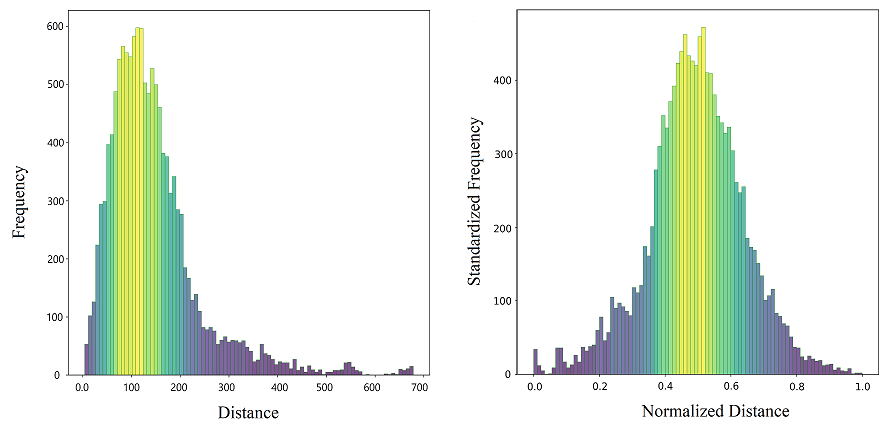
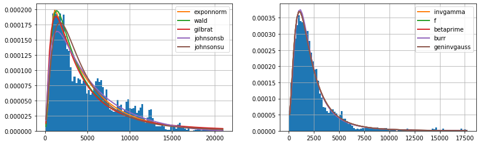
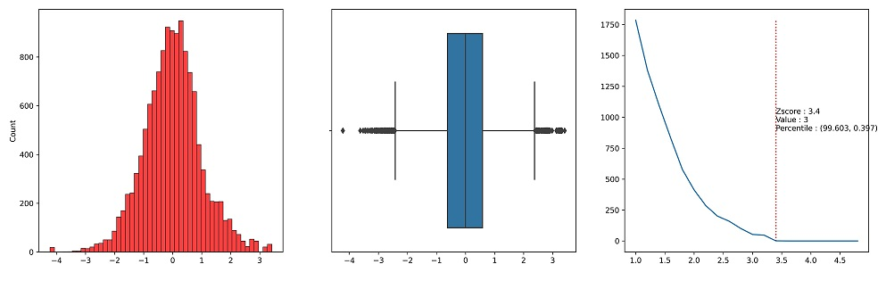

Abstract
The unequal distribution of healthcare services is the main obstacle to achieving health equity and sustainable development goals. Spatial accessibility to healthcare services is an area of interest for health planners and policymakers. In this study, we focus on the spatial accessibility to four different types of healthcare services, including hospitals, pharmacies, clinics, and medical laboratories at Isfahan’s census blocks level, in a multivariate study. Regarding the nature of spatial accessibility, machine learning unsupervised clustering methods are utilized to analyze the spatial accessibility in the city. Initially, the study area was grouped into five clusters using three unsupervised clustering methods: K-Means, agglomerative, and bisecting K-Means. Then, the intersection of the results of the methods is considered to be conclusive evidence. Finally, using the conclusive evidence, a supervised clustering method, KNN, was applied to generate the map of the spatial accessibility situation in the study area. The findings of this study show that 47%, 22%, and 31% of city blocks in the study area have rich, medium, and poor spatial accessibility, respectively. Additionally, according to the study results, the healthcare services development is structured in a linear pattern along a historical avenue, Chaharbagh. Although the scope of this study was limited in terms of the supply and demand rates, this work gives more information and spatial insights for researchers, planners, and policymakers aiming to improve accessibility to healthcare and sustainable urban development. As a recommendation for further research work, it is suggested that other influencing factors, such as the demand and supply rates, should be integrated into the method.
Here is some visual outputs of the study

Data Standardization

Data Fitting

Outlier Detection

The blocks with the same results by different ML methods

The final spatial accessibility map of the study area